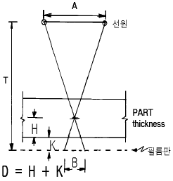
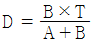
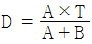
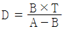
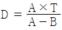
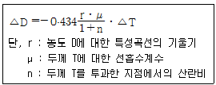
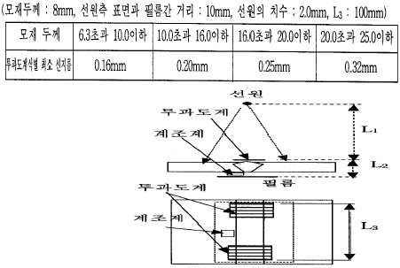

방사선비파괴검사기능사 (2003-03-30 기출문제)
1과목: 방사선투과시험법
1. 초음파탐상시험시 다음 중 특별점검이 요구되는 시기가 아닌 것은?
- 장비에 충격을 받았다고 생각될 때
- 탐촉차 케이블을 교환했을 때
- 일일작업 완료후 장비를 철수할 때
- 특수환경에서 사용했을 경우
(정답률: 알수없음)

2. 형광침투탐상시험시 다음 중 침투제를 적용할 때의 조건으로 올바른 것은?
- 밝은 실내에서 적용한다.
- 검사체의 표면온도는 -4°F∼175°F에서 적용한다.
- 현상제를 적용한 후 즉시 적용한다.
- 어두운 지역에서 자외선조사등을 켜고 적용한다.
(정답률: 알수없음)
3. 다음 중 공업용 방사선투과검사에 주로 많이 사용되는 선원들은?
- 알파선, 중성자선
- 엑스선, 알파선
- 베타선, 열중성자선
- 엑스선, 감마선
(정답률: 알수없음)
4. 서로 다른 2개의 X선발생장치에서 관전류, 관전압 및 측정 위치가 동일하여도 선질 및 선량율이 다르게 되는 원인으로 볼 수 없는 것은?
- 관전압 발생 방법
- X선관내에서의 흡수차이
- 관전압의 측정오차
- 측정장치의 오차
(정답률: 알수없음)
5. 다음 중 방사선투과사진의 상질과 관계가 없는 인자는?
- 필름의 종류
- 선원의 크기
- 산란 방사선
- 노출 시간
(정답률: 알수없음)
6. 다음 중 X선 발생장치의 주요 구성부가 아닌 것은?
- X-선관
- 선원용기
- 고전압 발생기
- 제어기
(정답률: 알수없음)
7. 다음 방사선 중 생물학적 효과비가 가장 큰 것은?
- 엑스선
- 알파선
- 감마선
- 중성자선
(정답률: 알수없음)
8. 감마선투과시험 장비에 사용하는 동위원소의 특성을 바르게 설명한 것은?
- 137Cs의 γ선 에너지는 1.33 MeV이다.
- 60Co 선원 1Ci는 1m 거리에서 0.37R/h이다.
- 192Ir의 γ선 존재비가 가장 큰 γ선은 0.31MeV이다.
- 170Tm은 β방출체로서 투과시험에는 이용할 수 없다.
(정답률: 알수없음)
9. X선 발생장치의 제어기를 만질 때 감전되었다. 다음 중 원인으로 볼 수 없는 것은?
- 접지의 불안전
- X선관의 파손
- 전원과 접지단자간의 절연불량
- 관전압 측정회로의 불량
(정답률: 알수없음)
10. 전류 5㎃, 노출시간 12분에서 가장 좋은 사진을 얻었다. 다른 조건은 바꾸지 않고 전류만 10㎃로 바꾸었다면, 동일한 사진을 얻기 위해 적용해야 할 노출시간은?
- 3분
- 6분
- 12분
- 24분
(정답률: 알수없음)
11. 방사선 투과사진이 구비할 조건으로서 다음 중 확인해야 할 사항이 아닌 것은?
- 시험부의 사진농도
- 투과도계의 농도
- 계조계의 값
- 투과도계 식별 최소 선경
(정답률: 알수없음)
12. 방사선투과시험시 필름 현상처리액중 강알카리성인 것은?
- 현상액
- 정지액
- 정착액
- 수세액
(정답률: 알수없음)
13. 다음 중 현상처리 과정에서 기인된 인공 결함이 아닌 것은?
- 파이프(pipe)
- 반점(spotting)
- 주름(frilling)
- 오염 물질
(정답률: 알수없음)
14. 방사선투과시험을 이용하여 결함깊이를 측정하는 방법 중 파라렉스법을 사용할 때 그림과 같은 경우 결함깊이를 구하기 위한 D값(필름면으로부터 결함까지의 거리)을 구하는 계산 공식으로 옳은 것은?





(정답률: 알수없음)
15. 방사선 투과사진상에 새발자국 모양의 무늬가 나타났다. 이의 원인으로 가장 올바른 것은?
- 과노출 및 과현상
- 정전기 현상
- 촬영전에 광노출 현상
- 현상전 정착액이 국부적으로 묻었을 때 생기는 현상
(정답률: 알수없음)
16. 방사선 투과사진의 두 영역사이의 농도차로 정의되는 콘트라스트는 다음 중 무엇에 의해 영향을 받는가?
- 검사체와 필름 자체
- 검사체와 필름 접촉 상태
- 검사체와 기하학적 불선명도
- 필름자체와 선원.필름간 거리
(정답률: 알수없음)
17. X선 발생장치의 올바른 사용법으로 틀린 것은?
- 사용전에 에이징을 한다.
- 야외 사용시에는 접지를 하지 않는다.
- 보호 장치의 작동시에는 그 원인 규명을 한다.
- 플러그를 깨끗이 유지한다.
(정답률: 알수없음)
18. 50Ci Co-60 선원에서 20m 지점의 시간당 선량률은? (단, Co-60의 상수(RHM값)는 1.32이다.)
- 0.165R/h
- 0.243R/h
- 0.423R/h
- 0.623R/h
(정답률: 알수없음)
19. 다음 중 비파괴검사를 하는 이유와 직접적인 관련이 없는 것은?
- 원제품을 평가하기 위하여
- 사용중에 생기는 결함을 찾기 위하여
- 용접후에 생기는 결함을 찾기 위하여
- 재료를 알맞게 가공하기 위하여
(정답률: 알수없음)
20. 방사선투과시험시 투과도계의 역할은?
- 필름의 밀도 측정
- 부위의 불연속부 크기 측정
- 필름 콘트라스트의 양 측정
- 방사선투과사진의 상질 측정
(정답률: 알수없음)
2과목: 방사선안전관리 관련규격
21. X-선 발생장치 구입시 첨부된 노출도표는 표준노출도표이다. 이는 어떻게 사용되어야 하는가?
- 그대로 사용하면 된다.
- 표준농도계와 차이가 없으면 그대로 사용된다.
- 현장조건에 맞춰서 새로 만들어 사용되어야 한다.
- 표준노출도표이므로 5년간은 그대로 사용된다.
(정답률: 알수없음)
22. 표면흠의 비파괴검사법으로 현재 실용화되지 않는 것은?
- 침투탐상시험법
- 와전류탐상시험법
- 자분탐상시험법
- 중성자투과시험법
(정답률: 알수없음)
23. 방사선 투과사진을 얻기 위해 촬영이 끝난 필름을 처리하는 절차로 옳은 것은?
- 현상 → 정착 → 수세 → 정지 → 건조
- 현상 → 수세 → 정지 → 정착 → 건조
- 현상 → 정지 → 수세 → 정착 → 건조
- 현상 → 정지 → 정착 → 수세 → 건조
(정답률: 알수없음)
24. 다음 중 알루미늄합금의 재질을 판별하거나 열처리 상태를 판별해 낼 수 있는 검사방법은?
- 와전류탐상검사
- 중성자 투과검사
- 적외선 검사
- 스트레인측정
(정답률: 알수없음)
25. 미소 두께차(△T)에 대응하는 투과사진 콘트라스트(△D)를 나타내는 아래 기본식에 대한 설명으로 맞는 것은?

- 두께 T가 증가하면 농도 D가 감소한다.
- 두께차(△T)가 작은 범위에서, 투과사진 콘트라스트 ｜△D｜는 ｜△T｜에 반비례한다.
- 양변에 환산계수 0.693(=1n2)가 상수로 주어져야 한다.
- 일정 두께차 ｜△T｜에 대한 투과사진 콘트라스트｜ΔD｜를 작게하기 위해서는 r와 μ를 크게하고, n을 작게하는 촬영조건이어야 한다.
(정답률: 알수없음)
26. KS B 0845에서 A급 상질의 투과사진 농도 범위에 해당하는 것은?
- 1.0 ∼ 3.5
- 1.0 ∼ 3.0
- 1.3 ∼ 4.0
- 1.8 ∼ 4.0
(정답률: 알수없음)
27. 다음 중 방사선 안전관리의 목적과 관계가 적은 것은?
- 방사성 물질 제조시설의 입지조건 선택
- 방사선 차폐 설계
- 방사선 측정기의 교정
- 원자력 발전소의 건설
(정답률: 알수없음)
28. 외부방사선피폭 방어의 세가지 방법에 속하지 않는 것은?
- 방사선강도는 거리의 역제곱 법칙에 의해 멀어질수록 감소하는 성질을 이용하는 방법
- 방사선이 피폭되는 양은 시간에 비례하므로 피폭되는 시간을 줄이는 방법
- 방사선은 거리에 비례하여 증가하는 성질을 이용하는 방법
- 방사선은 차폐체내에서 지수함수적으로 감소하는 법칙을 이용하는 방법
(정답률: 알수없음)
29. 외부방사선 피폭의 방어 3대 원칙은?
- 시간, 거리, 강도
- 차폐, 시간, 거리
- 강도, 차폐, 시간
- 거리, 강도, 차폐
(정답률: 알수없음)
30. 서베이메터의 눈금 지시침이 5.5mR/h에 있고, 배율 조정 손잡이는 X10 에 놓여 있었다. 이 때의 방사선량은?
- 0.55R/h
- 5.5mR/h
- 55mR/h
- 5.5R/h
(정답률: 알수없음)
31. 방사선 피폭에 있어서 공중의 허용 피폭선량을 작업인의 허용 피폭선량보다 낮게 한정하는 이유로서 적합치 않은 것은?
- 유아, 미성년자를 포함하고 있으므로
- 측정 및 감시, 감독을 받고 있지 않으므로
- 피폭에 의한 직접적인 이익이 없으므로
- 피폭을 임의로 선택할 수 있으므로
(정답률: 알수없음)
32. 대통령령이 정하는 방사선의 정의에 해당되지 않는 것은?
- 1만 전자볼트이상의 에너지를 가진 전자선
- 알파선.중양자선.양자선.베타선 기타 중하전입자선
- 중성자선
- 감마선 및 엑스선
(정답률: 알수없음)
33. KS B 0845에 의해 검출된 결함이 제3종 결함인 경우의 분류는?
- 1류로 한다.
- 2류로 한다.
- 3류로 한다.
- 4류로 한다.
(정답률: 알수없음)
34. KS D 0242에서 알루미늄 용접부의 방사선투과 시험방법에 의한 등급 분류는?
- 1,2,3,4급
- A,B,C급
- 1,2,3,4,5,6급
- A,B,C,D,E급
(정답률: 알수없음)
35. KS B 0845에 규정된 투과사진에 의한 흠 상의 분류가 잘못된 것은?
- 둥근 블로홀은 제1종으로 분류한다.
- 용입 불량은 제2종으로 분류한다.
- 텅스텐 말아넣음은 제3종으로 분류한다.
- 가늘고 긴 슬러그 말아넣음은 제2종으로 분류한다.
(정답률: 알수없음)
36. KS B 0845 강판의 맞대기용접 이음부의 촬영방법 및 투과사진의 필요조건 중 계조계의 적용구분에 맞는 것은?
- 모재의 두께가 15mm 초과 25mm 이하면 15형을 사용한다.
- 모재의 두께가 15mm 초과 30mm 이하면 20형을 사용한다.
- 모재의 두께가 20mm 초과 40mm 이하면 20형을 사용한다.
- 모재의 두께가 40mm 초과 60mm 이하면 25형을 사용한다.
(정답률: 알수없음)
37. KS D 0227 주강품의 방사선투과 시험방법에서 투과사진에 의한 흠의 영상에 대해 대상으로 하는 흠의 종류를 올바르게 짝지은 것은?
- 블로홀, 모래 박힘 및 개재물, 슈링키지 및 갈라짐
- 기공, 모래 혼입 및 개재물, 용입불량, 갈라짐
- 수축, 열간균열, 갈라짐, 텅스텐 권입
- 모래 혼입 및 개재물, 융합불량, 갈라짐, 주물귀 또는 케렌
(정답률: 50%)
38. KS B 0845에 따른 투과사진 상질의 적용구분에서 강관의 원둘레 용접이음부에 대한 상질의 종류가 아닌 것은?
- A급
- B급
- F급
- P1급
(정답률: 알수없음)
39. KS B 0845에 의거 강관의 원둘레 용접이음부의 촬영시 시험부의 가로터짐의 검출을 필요로 하는 경우, 시험부 유효 길이에 대한 설명중 틀린 것은?
- 1회 촬영에서 시험부의 유효 길이는 투과도계의 식별 최소 선지름, 투과사진의 농도 범위 및 계조계 값의 규정을 만족하는 범위
- 내부선원 촬영방법(분할 촬영)시 시험부의 유효길이는 선원과 시험부의 선원측 표면간 거리의 1/2이하
- 내부필름 촬영방법시 시험부의 유효길이는 관의 원둘레 길이의 1/10 이하
- 이중벽 편면 촬영방법시 시험부의 유효길이는 관의 원둘레 길이의 1/6 이하
(정답률: 알수없음)
40. 그림은 KS B 0845에 따른 강판의 맞대기 용접이음부의 방사선투과검사를 위한 배치이다. 투과사진의 상질을 B급으로 할 때 선원과 필름 사이의 최소 거리를 구하면?

- 250
- 300
- 375
- 425
(정답률: 알수없음)
3과목: 금속재료일반 및 용접 일반
41. 합금이 순금속 보다 좋은 성질은?
- 경도 및 강도
- 전기전도율
- 가단성
- 열전도율
(정답률: 알수없음)
42. 원자반경이 작은 H, B, C, N 등의 용질원자가 용매원자의 결정격자 사이의 공간에 들어가는 것은?
- 규칙형 결정체
- 침입형 고용체
- 금속간 화합물
- 기계적 혼합물
(정답률: 알수없음)
43. 면심입방격자를 가지는 금속의 단위격자 소속원자수는?
- 4 개
- 3 개
- 2 개
- 1 개
(정답률: 알수없음)
44. 체심입방정계로써 Ar〃 변태를 하여 얻어지는 담금질 열처리 조직은?
- 페라이트
- 트루스타이트
- 마텐자이트
- 시멘타이트
(정답률: 알수없음)
45. 재료의 연성을 알기 위한 시험법은?
- 에릭슨 시험
- 란쯔법
- 에멜시험
- 마크로시험
(정답률: 알수없음)
46. 강(steel)의 질화처리는 어느 물질에 의하여 이루어 지는가?
- H2O
- CO2
- NaOH
- NH3
(정답률: 알수없음)
47. 강에 황이 많이 개재되었을 때 고온에서 어떠한 현상이 일어나는가?
- 저온메짐(low tempering shortness)
- 상온메짐(cold shortness)
- 청열메짐(blue shortness)
- 적열메짐(red shortness)
(정답률: 알수없음)
48. 강의 강인성 및 내식, 내산성을 증가시키기 위하여 첨가하는 원소로 가장 적당한 것은?
- 니켈
- 구리
- 주석
- 황
(정답률: 알수없음)
49. 흰색의 인성이 있는 금속으로써 비중이 8.9이고 용융점이 1455℃인 원소는?
- 철
- 금
- 니켈
- 마그네슘
(정답률: 알수없음)
50. 반도체 기판으로 가장 많이 사용되는 반도체 금속은?
- 납
- 구리
- 실리콘
- 철
(정답률: 알수없음)
51. 자기 변태점이 없는 금속은?
- 철
- 주석
- 코발트
- 니켈
(정답률: 알수없음)
52. 금속의 소성가공을 재결정온도 이상에서 하는 것은?
- 냉간가공
- 상온가공
- 취성가공
- 열간가공
(정답률: 알수없음)
53. 일반적으로 가스용접 작업 중 불꽃에 산소의 양이 많아지는 경우의 결과에 대한 다음 설명 중 가장 중요한 것은?
- 용접봉의 소비량이 많아진다.
- 용제의 사용이 필요없게 된다.
- 용접부에 기공이 생긴다.
- 용접부의 비드가 아름답다.
(정답률: 알수없음)
54. 용접변형을 최소로 줄이는 방법으로 틀린 것은?
- 적정한 용접 조건을 택할 것
- 예열과 후열을 하지 말것
- 용접 지그를 이용할 것
- 용접 순서를 충분히 고려할 것
(정답률: 알수없음)
55. 직류 아크용접에서 역극성에 대한 설명으로 올바른 것은?
- 모재의 용입이 깊다.
- 용접봉의 녹음이 느리다.
- 비드 폭이 좁다.
- 박판, 주철, 고탄소강, 합급강, 비철금속의 용접에 쓰인다.
(정답률: 알수없음)
56. 슈퍼 컴퓨터에 관한 설명 중 옳지 않은 것은?
- 병렬 처리 구조로 되어 있다.
- 인공 지능 프로세서로 처리한다.
- 연산을 매우 빠른 속도로 수행한다.
- 방대하고 복잡한 계산이 필요한 곳에 쓰인다.
(정답률: 알수없음)
57. 인터넷에 접속되어 있는 서버에서 파일을 자신의 컴퓨터에 복사하고자 할 때 사용되는 프로토콜은?
- POP
- FTP
- HTTP
- TCP/IP
(정답률: 알수없음)
58. 다음 중 웹 브라우저를 통해 사용할 수 있는 인터넷 검색 엔진이 아닌 것은?
- 네이버(http://www.naver.com)
- 야후(http://kr.yahoo.com)
- 심마니(http://www.simmani.com)
- 조인스(http://www.joins.com)
(정답률: 알수없음)
59. 일종의 전자게시판을 가진 기능으로 한 시스템의 사용자에게 국한된 다른 전자게시판과 달리 뉴스 그룹이라 불리는 여러 개의 기사들을 교환하는 것은?
- BBS
- 전자우편
- 유즈넷
- 고퍼
(정답률: 알수없음)
60. 우리나라의 정보화 수준은 상당히 높은 수준에 있다. 이에 걸맞게 사이버 공간에서 기본적인 예의와 윤리를 지켜야 한다. 이를 일컫는 용어는?
- Netizen
- Netiquette
- Stocker
- Internet Worm
(정답률: 알수없음)